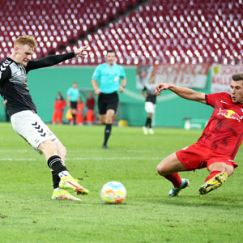
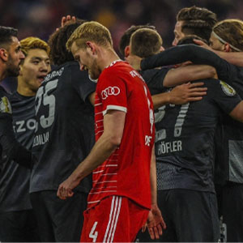
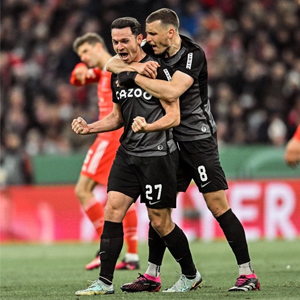
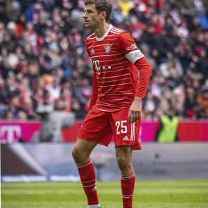
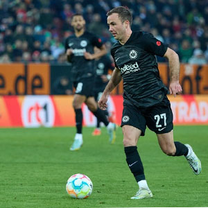
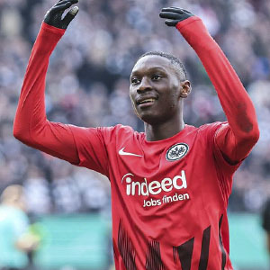

Confira aqui as melhores imagens da ultima rodada da bundesliga!

O Teutonia 05, time da 4° divisão alemã, simplesmente ZOANDO o Borussia Dortmund por terem
conseguido finalizar 5 vezes a mais do que eles contra o RB Leipzig

Pela PRIMEIRA vez na HISTÓRIA o Freiburg vence o Bayern!

O FREIBURG ESTÁ CLASSIFICADO PARA A SEMI FINAL DA DFB POKAL!! O time venceu o Bayern de Munique
PELA PRIMEIRA VEZ NA HISTÓRIA!

Thomas Müller se tornar o jogador com mais jogos de DFB-Pokal na história do Bayern de Munique

Mario Götze é o novo TOP 1 de assistências da DFB-Pokal

O Bayern sabe que Kolo Muani pensa em uma mudança para Munique.